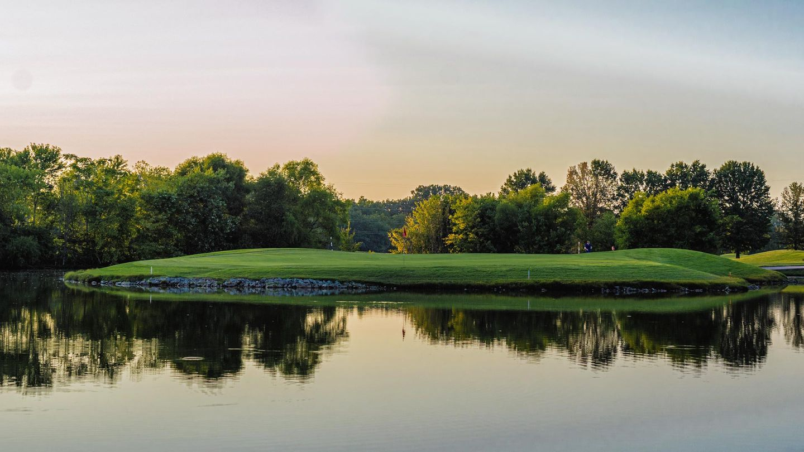

Franklin Bridge Golf Club — formerly known as the Crossing Golf Course — offers one of the most scenic championship golf experiences in the Nashville suburbs. Located in Franklin, Tennessee, just south of Nashville, the course plays through 6,968 yards of varied terrain with beautiful views of the Harpeth River framing several holes. A full-service pro shop and The Crow's Nest restaurant make Franklin Bridge a complete destination for a day of golf.
The course is set up to accommodate golfers of a wide range of abilities, and its competitive green fees make it an appealing alternative to the pricier private-feeling courses in Williamson County. Whether you're a Franklin local or driving down from Nashville for the day, Franklin Bridge delivers a well-maintained, enjoyable round in a scenic river corridor setting.
Franklin Bridge plays to 6,968 yards at a par 72. The layout features a mix of open and wooded holes, with the Harpeth River providing both scenic beauty and strategic challenge along several corridors. The course is well-suited for mid-handicappers and offers enough length and variety to challenge lower-handicap players from the back tees.
Franklin Bridge offers straightforward and competitive pricing. Weekday rates (Monday through Thursday) run $29.95 to $46.95 for 18 holes, with 9-hole rounds available at $29.95. Weekend and holiday rates are $36.44 to $62.95 for 18 holes. Junior golfers 17 and under play for just $9 on weekdays and $18 on weekends and holidays — one of the best junior values in the Nashville area. Cart is included with green fees.
Franklin Bridge's most talked-about stretch runs along the Harpeth River, where several consecutive holes play parallel to the water. The combination of river views and the natural tree canopy overhead creates one of the more atmospheric stretches of golf in Williamson County. Early morning rounds here — when mist rises off the Harpeth — offer a particularly memorable golf experience.
The Crow's Nest restaurant is a popular post-round destination offering food, drinks, and views of the course. The pro shop is fully stocked with equipment and apparel. Event facilities are available for corporate golf days, weddings, and group functions. Junior programs and group lessons can also be arranged through the pro shop.
Franklin Bridge Golf Club is located in Franklin, Tennessee, south of Nashville via I-65 or US-31. Contact the pro shop for the current address and tee time bookings. The course is open seven days a week.